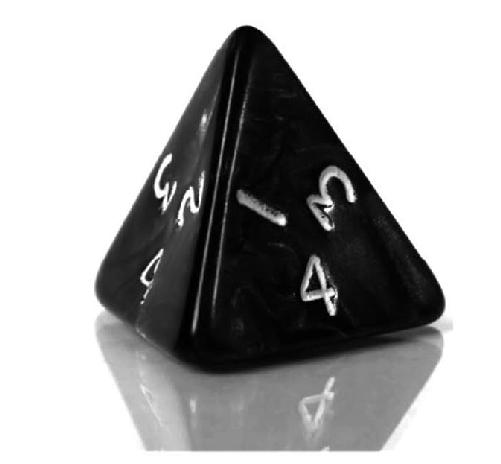
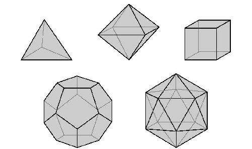
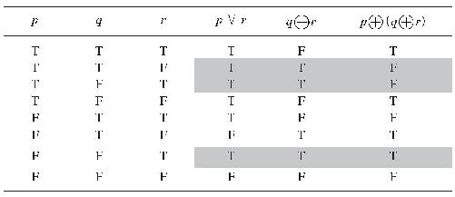
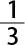

在第三章我们讨论了逻辑解释。这种解释具有这样一个吸引人的特征：每个（用数字表示的）概率都有一个唯一的值，这个值和命题之间（或者命题集之间）的一种关系相对应。然而它的缺陷在于，我们不清楚应该如何获得这些值。
中译本边码：61
然后在第四章，我们考察了主观解释，这种解释的优点在于这个吸引人的特征：对于我们如何测量概率说得很清楚（至少更加清楚）。然而它的不足之处在于，概率并不像通常那样具有唯一的值。因此，给定我们所能掌握的科学数据，并不存在关于相对性理论的客观概率。不存在任何独立于我们的事实问题。只存在关于相对性的若干个人的概率。但这看上去是反直觉的。
这样的话，要是把每种解释的优点都拿出来，努力打造关于概率的一种新解释，将会如何呢？这就是客观贝叶斯主义者［比如Edwin Jaynes（1957）和Jon Williamson（2010）］的目标所在了。他们把主观解释作为出发点，由此把概率和可测量的置信度联系起来。但是他们引入了新的要求，以便让可测量的置信度可以算作概率。简单地讲，客观贝叶斯主义者与主观主义者都赞同这 一点：概率是合理的置信度。但关于什么样的置信度是合理的，他们的意见并不一致 。相比于主观主义者的看法，客观贝叶斯主义者认为需要多遵守几条规则。
中译本边码：62
让我们来考虑一组置信度。比如说，它们涉及掷一个规则的四面体骰子。（我之所以使用这个例子，是因为四个面的骰子并不像六个面的骰子那样常见——尽管在许多桌面角色扮演游戏当中经常会用到它们——而且因为有一点是重要的：除了下面我要详细说明的内容，我并不假定你拥有任何掷骰子的经验。）

图5.1 一个四面体骰子［slpix］
在图5.1中我们可以看到，这个骰子以4落地。但当掷骰子的时候，关于这个骰子如何落地，我们何以可能确定合理置信度呢？威廉森（Williamson 2010）认为这些理性置信度应该服从三个限定：
1. 概率 （Probability）
2. 校准 （Calibration）
3. 含糊 （Equivocation）
让我们依次来解释这些概念。概率 指的是，合理置信度应该满足概率公理。这与主观主义者所说无异。例如，如果我们假定掷这个骰子的时候必定会是其四个面中的某一个面落地，那么它以这四个面当中任意一个面落地的概率之和必须是1：P（1）＋P（2）＋P（3）＋P（4）＝1。同理，这个骰子不以这四个面当中任意一个面落地的概率必须是0：P（┓1&┓2&┓3&┓4）＝0。如此等等。这里没有任何让人感到奇怪的地方。
校准 是一个新增的限定条件。它说的是，合理置信度也应该对所获得的其他相关信息保持敏感。尤其是，它们应该对所观察到的（相关）事件的频率，也就是有关基于世界的概率的证据保持敏感。于是，设想合理置信度按照如下信息是条件性的：到目前为止掷骰子所得为“1”的结果占全部结果的40％。相应地，P（1）就应该设定为：P（1）＝0.4。其他可以把握到的经验信息，以及通过使用这些信息而得到检验的物理学理论，也可以被认为是相关的，尽管我们在这里并没有 把这些包含在内。［例如，涉及掷出其他规则的凸多面体骰子的结果的证据——比如标准立方体以及图5.2中所描述的其他形状——也可以被考虑进去。如果考虑物理上的对称性，那就可以表明，所有这样的骰子都是均匀的（当它们具有一致的密度，也就是没有什么偏重的时候）。因此，我们可以认为，任意给定的一个面落地的概率应该是1/n ，这里的n 是所说的规则凸多面体的面的数目。］
中译本边码：63

图5.2 理想的正多面体［彼得·赫尔墨斯·福里安（Peter Hermes Furian）］
最后一个限定条件——含糊， 用杰恩斯的话说就是：“对于缺失的信息”我们应该“最大限度地不予明确”（Jaynes 1957： 623）。从第三章对无差别原则的讨论中，我们对这个思想应该感到很熟悉了；回忆一下，正如凯恩斯所说，“如果没有正面的理由指派不相等的概率，那就应该把相等的概率指派给几个参数当中的每一个”（Keynes 1921： 42）。我们还是用正四面体的例子来说明问题吧。当进行校准 的时候，基于所假定的经验信息会得到P（1）＝0.4，但对于其余的可能性哪一个将会发生，却没有任何信息。因此，一个理性人应该对这些剩下的可能性不予确认 ，也就是给每一个都指派相同的概率：P（2）＝P（3）＝P（4）＝0.2。
中译本边码：64
在继续讨论之前，再给一个例子可能是有帮助的，它可以帮助我们说明以上这些限定是怎样用于计算概率的。设想一下，根据经验，你知道如下两个断言为真：p ∨r 和q ⊕ r 。（与前面第三章一样，我们用“ ⊕ ”代表不相容意义上的“或者”，用新符号“∨”代表相容 意义上的“或者”。这两种意义之间的区别很简单：p ⊕ q 为真，仅当p 或者q 中一个为真，而另一个为假；p ∨q 为假，仅当p 与q 都为假。）对于断言p ⊕ （q ⊕ r ），你的合理置信度——也就是你要指派的概率——是什么？
中译本边码：65
表5.1有助于回答上述问题，它表明了这些公式的真值是如何相互关联的。首先，从我们在第三章所用的真值表可知，其中的行表示的是逻辑可能性。因此，这八行合起来代表了p 、q 与r （以及其他公式）的全部可能组合的值。但其中只有三行与回答这个问题相关，因为你知道p ∨r 与q ⊕ r 只在这三行是真的，也就是第二行、第三行和第七行，我们已经用灰色标出。
表5.1 p ∨r 、q ⊕ r 、和p ⊕ （q ⊕ r ）的真值表

按照这个思路思考。你想知道的是p ⊕ （q ⊕ r ）是否为真。你拥有的信息——p ∨r 与q ⊕ r 为真——能够帮你排除一些可能性。它告诉你，现实世界不是由第一、四、五、六或第八行来表示的。你可以把这看作一个在逻辑上发现地理位置的过程，而且可以把真值表看作一张地图。你的信息就如同一台简易的全球定位系统（GPS）装置。在这种情况下，它让你知道你处在三个逻辑位置当中的哪一个上面。如果你没有这些信息，那你就只能知道自己处在八个逻辑位置当中的某一个上面了。
你现在已经得到了校准。然而除此之外，你没有关于你处在哪个逻辑位置上的任何信息。因此，你必须对其余的可能性保持含糊（但必须遵守概率限定）。因此，你应该给每一种保留下来的可能性指派相等的概率：P（第二行）＝P（第三行）＝P（第七行）＝

。现在你只需要注意到，p ⊕ （q ⊕ r ）为真仅当第七行对应着你所在的位置。（在第二行和第三行，它是假的。）因此，P（p ⊕ （q ⊕ r ），（p ∨r ）&（q ⊕ r ））——给定p ∨r 和q ⊕ r ，你对p ⊕ （q ⊕ r ）所拥有的合理置信度——为三分之一。中译本边码：66
对含糊标准的一个潜在的论证从这个例子中也会变得显而易见了。假定你发现自己处在三个逻辑位置当中的哪一个——那些与你的经验信息相容的（如表5.1中灰色部分所示）——是随机 选择的。随着时间的流逝，如果你总是发现自己处在同一类情境当中，那么p ⊕ （q ⊕ r ）将会有三分之一的次数为真（其余次数则为假）。因此，诀窍就是：考虑这三种逻辑可能性的频率——而不是现实世界当中事件或事物发生的频率。对这个论证的主要担忧在于，初始假定——你发现你自己处在随意 某个位置——是否正确。（毕竟不存在这样的过程 ，通过它你就会落入三个逻辑上可能的情境当中的某一个。没有什么魔鬼在和你玩游戏。但愿如此！）
我们这就来看一看对客观贝叶斯主义提出的一些批评。我们也将探讨它和逻辑解释之间的关系，关于逻辑解释我们前面说的话不多。但在动手之前，我们应该先来讨论一个有可能产生混淆的地方。我们还是使用对话的形式吧。
学生甲： 等等，我觉得有点儿乱。
达瑞： 觉得哪里乱了？
学生甲： 我们不是应该讨论一种对概率的解释 吗？
达瑞： 是啊。
学生甲： 但是，客观贝叶斯主义似乎是对数字——合理置信度——感兴趣，而这些数字不只是要满足概率的数学公理，它们也必须满足校准和含糊的标准。
中译本边码：67
达瑞： 问得好。但是，一方面，很多组数字都满足概率公理，但我们却不想说它们就是概率。另一方面，凯恩斯甚至提出，有些概率关系是非数字性的，不过这一点我在前面还没有提到过。
学生甲： 我只记得：我们一直忙着解释这个数学概念，现在也是忙这个……
达瑞： 在第一章我的确是这么做的，不是吗？但你可以看一下后面的情况。客观贝叶斯主义观点的目标是要解决下面这个问题：这个数学概念应该如何在多个 语境当中使用。
学生乙： 让我试着说得直白一些吧。一个客观贝叶斯主义者可能会承认，一些数学上的 概率应该只被解释为主观的？例如，一个认知主体所拥有的置信度只满足这一个对概率的限定，而不满足另外两个限定？
达瑞： 是的，这是当然。
学生甲： 好的。但我仍然怀疑，用“解释”（interpretation）来考虑问题还是会有些误导。
达瑞： 这么说并不是没有道理。我们肯定不想在如何使用“概率”这个词的问题上陷入口舌之争！因此，如果你觉得合适的话，就不要用解释来考虑问题了。
学生甲： 像这样考虑问题会怎么样呢？主观主义者与客观贝叶斯主义者之间的争论所涉及的是：在说明人们该如何进行推理这个问题上，概率的数学理论扮演了什么角色 。
达瑞： 听起来感觉不错。无论怎样，我们是在做概率的哲学。
总而言之，有一个选择是把概率的数学概念看作描述其他东西的一种手段，例如在数学被创造出来之前我们所拥有的关于概率的想法。换句话说，如果你想把“概率”作为数学概念，那你就可以认为我们是在探索应用这个数学概念的合法的方式。
现在我们可以考察几个针对客观贝叶斯主义提出的反对意见了。我们还是通过对话的形式吧。
中译本边码：68
学生甲： 我对校准这个标准有点担忧。
达瑞： 是吗？
学生甲： 下面这种说法好像挺奇怪：一个强烈反对经验主义的人——这个人因此而相信被观察到的频率与形成有关将来会发生什么的判断并不相关——是不理性的，如果他没有注意被观察到的频率。你明白我的意思吗？
达瑞： 这个观点挺有意思。这就好像没有注意到频率是不合理的一样！而且这是一件难以让人相信的事情。然而，我认为客观贝叶斯主义——至少是它的一些变体——能够 允许人们掌握证据，以证明应该在特定情境内将频率忽略掉，并按照这一证据行事。
学生乙： 也许我们也可以从外在观点看待“不合理的”？我们可以把“是不合理的”看作通过一种不可靠的方式进行推理，而不是看成并非内在一致或如此这般的东西……
学生甲： 我是这样想的。但现在我担心，主观主义者和客观贝叶斯主义者从根本上说通过不同的方式理解“合理的”，两者甚至采纳了完全不同的认识论观点。
达瑞： 这个想法很有见地。我相信他们观点上的有些分歧实际上是可以这样来解释的。
学生乙： 有意思。我们继续讨论可以吗？
学生甲： 没问题。
学生乙： 我担忧的事稍有不同，但也是与此相关的。我担忧的是校准和含糊谁先谁后。
达瑞： 这个听上去让人印象深刻！
学生乙： 哈！这只是我的希望！总之这就是我的想法。还记得上一章结尾我们谈论的独立事件吗？也就是红灯和绿灯交替亮起的事。校准的标准好像是说，我们应该假定 这些事件都是独立的，除非我们有证据证明它们不能独立。
中译本边码：69
达瑞： 你能举个例子吗？
学生乙： 当然可以。如果你只知道“3”这个结果先前出现的概率是50％，此时我们考虑掷出一个六面体骰子所得到的结果的合理置信度。为什么你应该认为下一次掷出的结果是“3”的概率还是50％呢？
达瑞： 你所说的事情相当微妙。你不得不同意，我们确实拥有一些关于这个骰子怎样着地的相关信息——也就是说，至少，如果我们假定未来和过去会在某些方面相似？
学生乙： 是的。但我的担心是，我们是否应该按照有关下一次掷出的结果 的信息采取行动？为什么我们不能按照如下形式进行推理呢？关于掷出骰子的结果是独立的还是不独立的，我们不掌握任何信息。因此，根据含糊标准，我应该给不独立性和独立性以相等的置信度，即都是二分之一……
达瑞： 你的观点很有道理。客观贝叶斯主义者说的是，我们只有在校准之后才可以含糊。但是校准当中所包含的东西——当涉及被观察到的频率时——看起来好像违背了含糊的宗旨，因此削弱了对它的证成。对吗？
学生乙： 对。在这个问题上，凯恩斯的逻辑观点似乎更加灵活。
达瑞： 是的。但是，让我来补充一下吧。原则上，客观贝叶斯主义只会让“校准”更加含糊，而不会明确提到关于频率的任何事情 ——不过，我认为这将会导致客观贝叶斯主义的一个变体，它和我们所考虑的客观贝叶斯主义不一样。
学生丙： 嗯嗯。既然现在含糊与凯恩斯都被提到了，我能再提出一个担忧吗？
学生乙： 说吧。
学生丙： 客观贝叶斯主义真的 比逻辑解释好吗？首先，含糊“标准”难道实际上不正是另一个伪装的无差别原则吗？其次，你说过，“校准”应该保持模糊。这难道不就是凯恩斯的逻辑解释的观点吗？
中译本边码：70
达瑞： 这个就是我正在等待的反驳。
这样就产生了一个问题：客观贝叶斯主义是否像初看上去那样区别于逻辑解释？接下来我们就来讨论这个问题。
学生甲： 既然你认为客观贝叶斯主义与逻辑解释之间没有太大差别，那为什么还用了一章的篇幅来讨论它呢？
达瑞： 我想你已经读过我的一篇文章了！你说得对，我并不认为两者之间有太大差别。但我之所以用一章的内容来探讨客观贝叶斯主义，有两个原因。首先，也许我是错的！其次，“客观贝叶斯主义”这个名称和概率哲学中一种很活跃的立场典型地相关；相对而言，几乎没有谁宣称自己正在从事“逻辑”观点的研究。
学生乙： 好。但为什么你认为这两者之间没有太大差别呢？
达瑞： 让我来论证一下，好吧？但首先请允许我承认它们两者之间存在一个真正的区别。逻辑解释最终关注的是命题之间客观的逻辑关系——部分衍推或者内容。而客观贝叶斯主义则直接关注了（合理的）置信度。但是，如果你认为合理置信度应该遵循逻辑关系（像凯恩斯那样），或者认为应该根据合理置信度去界定 逻辑关系（就像威廉森那样），那么它们之间的联系也就清楚了。
学生甲： 我明白了。但在我们接着讨论之前，下面这个观点是否可以辩护：坚持对概率进行逻辑解释，同时却否认 合理置信度应该遵循逻辑关系？
达瑞： 是的。考虑一下波普尔的研究。他论证说，普遍科学规律的逻辑概率相对于我们所能获得的任何证据来说为零。他的基本思想是：任意有限的证据都可以和无限多的理论相容；因此，如果我们在这些理论上坚持含混，我们将不得不给它们每一个都赋予一个为零的概率。但是，这难道意味着相信热力学这样的普遍科学规律是不合理的吗？不一定吧。也许，在已知没有反对证据的情况下，即使没有证据也完全可以相信某件事物。要是出于实用的考虑呢？我希望你能明白我的意思。
中译本边码：71
学生甲： 我明白。我想到了帕斯卡赌 ：相信上帝是有用的，因为这可以帮助你进入天堂，即使你没有上帝存在的任何证据。而你所说的话和一种“折中”观点是相容的，按照这种观点，合理置信度有时候 应该遵循逻辑关系，但其他时候不应该——或者不需要遵循这些。
达瑞： 完全正确。
学生乙： 让我们回过头来谈一谈：为什么你不 认为逻辑解释与客观贝叶斯主义解释不一样？或者说得更准确一些，为什么你不认为这两者之间存在其他重要的差异。
达瑞： 为什么你不告诉我你何以认为它们是不同的呢？
学生乙： 好吧。逻辑解释并不涉及校准这个标准。这样回答怎么样？
达瑞： 实际上，这一点并不像它初看上去那么明显。为什么呢？有可能把校准标准理解为关于命题（其中也许包含着经验信息）之间逻辑关系的一条规则 。再来看一下我们前面讨论中你所举的那个六面体骰子的例子。我们只知道“3”在先前掷出时出现过一半的次数，而且知道存在六种可能的结果。（当然，我们也知道一些数学知识。运用你的常识。）但是，也许这些命题与“下次掷出将会出现3这个结果”之间的逻辑关系是0.5吗？而且，校准也许只是一条涵盖类似情况的一般性规则？
学生乙： 我明白你的意思了。也就是说，你可以相信校准同时也坚持逻辑观点吗？
达瑞： 我是这样看的。你可能会这样论证：逻辑观点并不要求校准，增加校准的要求会导致逻辑解释的一个特定 版本。但没理由因为你认为校准恰当，便去拒斥逻辑解释。
中译本边码：72
学生乙： 这样就清楚了。逻辑观点并不意味着校准是错误的，因此你不能通过表明校准是真的来表明逻辑观点是错误的。
达瑞： 说得好。接下来该谁了？
学生丙： 我本来想说，在凯恩斯的逻辑解释当中，没有提供明确测量置信度的方法。但现在我认为你的回答会是：他并没有通过赌博程序或者评分规则或者你所掌握的什么手段把对置信度的测量排除在外。因此，实际上凯恩斯完全可以坚持他在置信度的测量这个问题上自己想要的观点——也就是说，只要和逻辑关系不同就行。
达瑞： 完全正确。
学生丙： 于是，也许我们可以再来谈一谈这个问题：含糊标准是不是一种有别于无差别原则的东西？
达瑞： 好，咱们就来试一试。事实上，客观贝叶斯主义使用的是这样一个原则，他们称之为“最大熵原则”。这是杰恩斯提出来的。
学生丙： 那么，最大熵原则是怎么说的呢？
达瑞： 熵是一个出自物理学的思想——杰恩斯是一位物理学家，但我并不想讲得太技术化。因此，我下面只是直接引用他的话，看他是怎样描述他如何会认为最大熵原则不同于无差别原则的：
最大熵原则可以被看作是不充足理由原则［“无差别原则”的另一个名称］的一个扩展（对它来说，一旦除了各种可能性的列举之外没有提供任何别的信息，最大熵原则就会被还原为不充足理由原则……），它们之间的主要差别在于：最大熵的分布之所以能够被断定，乃是因为下面这个肯定性理由：它被唯一地确定为对于缺失的信息最大程度地不置可否，而不是因为下面这个否定性的理由：没有任何理由不去这样认为。（Jaynes 1957： 623）
学生丙： 这话太絮叨了。
达瑞： 是的，还是让我们说得简单些。杰恩斯提出了两个关键论断：（A）如果人们已知的只有可能的结果，最大熵原则就被还原为无差别原则；（B）有正当理由去应用最大熵原则——也就是说，它导致置信度具有最大限度的含糊性——也就是说，没有正当理由去应用无差别原则。
中译本边码：73
学生甲： 我们能先讨论这里的（B）吗？我知道我们当下的任务应该是反驳你，但对我来说这好像是错误的。我正在看凯恩斯给出的关于无差别原则的定义，你在第三章引用过他的话。他的话是这样说的：
无差别原则断言的是，在几个可选项当中，如果不存在已知的任何理由去断定某一个主题而不是另一个，这些可选项的每个断定就都有相等的概率。因此，如果缺乏指派不相等概率的肯定性理由，那么相等的概率必须指派给几个论证当中的每一个。（Keynes 1921： 42）
达瑞： 谢谢你提出了这段话。
学生甲： 不客气。现在来看最后一句：“如果缺乏指派不相等概率的肯定性理由，那么相等的概率必须被指派给几个论证当中的每一个。”显然，凯恩斯和杰恩斯都赞同这一点，是吗？
达瑞： 是的。
学生甲： 另外，凯恩斯在对这个原则的陈述当中，并没有说是因为 没有任何已知的理由不这样做，所以才应指派相等的概率。它只是说，在缺乏支持不这样做的已知理由的情况下，我们就应该指派相等的概率。
达瑞： 又说对了。在这个陈述当中并没有出现“因为”这个词！
学生甲： 因此，杰恩斯认为由于否定性理由而断定无差别原则是错误的。（B）是错误的。事实上，支持使用无差别原则的一个论证恰恰 是这样的：当没有关于它是否如此的信息时，它就要避免预设某事物是真的（或是假的）。
达瑞： 我想现在我应该问你对（A）有什么看法，因为你把我的这份工作做得太好了。
学生甲： 它也是错误的。
达瑞： 为什么呢？
中译本边码：74
学生甲： 非常简单。用凯恩斯的话说，当你不只枚举一种可能性时，你就会“缺乏肯定性理由去指派不相等的”概率。
达瑞： 能举个例子吗？
学生甲： 非常容易。我已经看到一枚硬币被抛掷了许多次，而且我知道出现“正面”朝上的结果和出现“背面”朝上的结果之比例大约为1∶1。现在我所知道的就不只是下次抛掷的可能结果了。但是，给“正面”和“背面”指派不相等的概率的根据还是不够的。由此可见，无差别原则给指派相等的概率提出了肯定性建议。
达瑞： 我同意。
学生甲： 这么说，杰恩斯的错误很严重吗？怎么会这样？
达瑞： 我就直言不讳了。我认为尽管杰恩斯提到了凯恩斯，但他对凯恩斯思想的解读仍不够认真严谨。因此，他并没有对凯恩斯的思想给予应有的重视，也没有认识到自己在某种程度上只是做了无用功。我是这么看的。别人也许不同意我的看法。
学生丙： 而且，这也就是哲学所做的一切！
达瑞： 你把我要说的话给说出来了。
学生乙： 好吧，我觉得你说得有点苛刻了。
达瑞： 也许是吧。但即使我们认同无差别原则与最大熵原则不一样，又有什么能够阻止凯恩斯或者逻辑观点的其他追随者接受后者呢？凯恩斯当然 不会否认关于含糊存在着肯定性的理由！
学生乙： 好。
学生丙： 抱歉，打断一下。但是，我现在能不能把我们的注意力重新引向我之前反驳客观贝叶斯主义时提出的问题呢？如果关于这两条原则的提议不存在任何实质区别，那么，它们肯定都会面对第三章中提到的“地平线”那样的悖论吗？也就是说，如果我们用不同的方式对可能性进行划分，那么，通过运用这两条原则我们就会得到不同的概率指派吗？
达瑞： 我认为是这样的。实际上，杰恩斯花了很长时间去处理这样的悖论。而我并不认为他是成功的。另一方面，威廉森恰恰认为它们当中有些是不可解决的。他承认，在有些 情境当中，含糊处理会导致多于一种结果。即便如此，他仍然认为我们应该坚持含糊标准。
中译本边码：75
学生丙： 好的，谢谢你的解释。
达瑞： 没问题。我们讨论的结果当然就是这样：在威廉森的客观贝叶斯版本当中，概率并不总是 具有唯一的值。例如，在“地平线”的情况当中，我们不必为了成为理性的而要求必须存在着唯一的答案，因为 我们可以通过不同的方式进行合法的含糊处理。
学生丙： 我明白了。因此，相对于客观贝叶斯理论，或者至少是它的威廉森版本来说，这样的悖论对于逻辑解释更成问题，是吗？
达瑞： 也许吧。但是，也许坚持一种逻辑观点，同时在这种情况下否认我们能把握到一种逻辑上的概率，这有可能吗？或者坚持认为进行计算非常困难或诸如此类的事情。
学生丙： 这个问题引人深思。
通过以上的对话，有一点已经变得显而易见了：在主观解释与客观贝叶斯解释之间确实存在这一个解释的范围 （Spectrum）。从主观论以及对合理置信度施加的概率限定开始，我们想再引入哪些我们喜欢的限定，原则上是自由的。例如，我们可以引入校准标准，但不引入含糊标准，反之亦然。而且，我们可以采取更加复杂的方法，例如约定限定语境（Context-specific）的标准。这里有一个例子。你可能会说，含糊只是面对有穷不可分选择时适用的一个标准——就像第三章提到的酒馆赌博场景当中，我赢了那么多钱。或者你也可以说一些略有不同的事情，比如你可以说，含糊只是当你面对你相信 是有穷而且不可分的选择时才适用的一个标准。可能性是无限的。选择在你自己。
推荐读物
中译本边码：76
清楚表达并捍卫客观贝叶斯主义最主要的高水平研究可以参阅Jaynes（2003）和Williamson（2010）；后者更容易把握，其中有些部分属于中级水平。《哲学与概率》（Childers 2013：第六章）对最大熵原则进行了详细的中级水平的讨论。《论概率的逻辑解释和“客观贝叶斯解释”之间的亲近性》（Rowbottom 2008）在中到高级层面上考虑了逻辑解释和客观贝叶斯解释之间的关系。